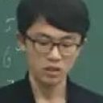
John
John 大约在 2015 年秋季招新后正式走上北航头马的舞台。2015 年 10 月 16 日的第 114 次会议上，他以破冰演讲《The way I grow up》登场——从一张双胞胎合照讲到大学里轮滑、台球、麻将样样精通的生活，最后落到"我不可能成为爱因斯坦或奥沙利文，我只想成为我自己"，一举拿下当晚的 Best Prepared Speaker。这次亮相几乎奠定了大家对他的印象：从容、有逻辑、带着温柔的幽默。
此后他几乎成了俱乐部最稳定的存在。CC 之路一路走来——《My Deskmate》讲三任都是女孩的同桌往事，《Inside and Outside》谈凡事要从多个角度去看，到 2016 年底的《Don't be trapped and don't be afraid》劝人跌倒后仍要装好正能量继续前行，再到 2017 年的《Simple, clear and powerful》探讨如何把想法简单、清晰又有力地表达出来。会友们眼中的 John 总是"如往常一样精彩""无论什么问题都能从容应对"，纪要里甚至直言他是"最有希望竞选下任主席的人"。
更难得的是他的主持与服务热情。无论是当 Toastmaster 串起整场（Role on the team、Winter、Leaving Home 等多场），还是做即兴主持人 Table Topics Master 抛出一个个犀利又走心的题目，他都乐在其中。他主持 To be active 那场时写下的开场白——"主动去获取信息、迅速理解局势，才是成功的关键；没有人有时间和耐心去帮一个被动、只会等待的人"——道出了他对头马、也对生活的信念。2016 年春季比赛他作为即兴演讲选手登台，在"人工智能是否威胁人类"的辩题上坚定站在反方，思路清楚、表达笃定。从台下羞涩的新人到台上的中坚，John 用一场场演讲与一次次主持，诠释了头马"在这里造就更好的人"的意义。
里程碑
闯关之路 · Competent Communication
做过的演讲 · 5 场
担任过的会议角色
为俱乐部做的事
- 长期担任会议 Toastmaster 总主持，稳定串起多场例会的流程与节奏
- 多次出任即兴演讲主持人(TTM)，精心设计走心而犀利的即兴题目带动全场讨论
- 代表俱乐部参加2016春季比赛即兴演讲环节，为俱乐部争光
- 在2017秋季比赛中担任点评演讲嘉宾，输出专业点评
- 以稳定的破冰到 CC6 演讲产出，成为新会员学习的榜样与俱乐部的中坚力量
照片墙 · 时间线
 ✓
✓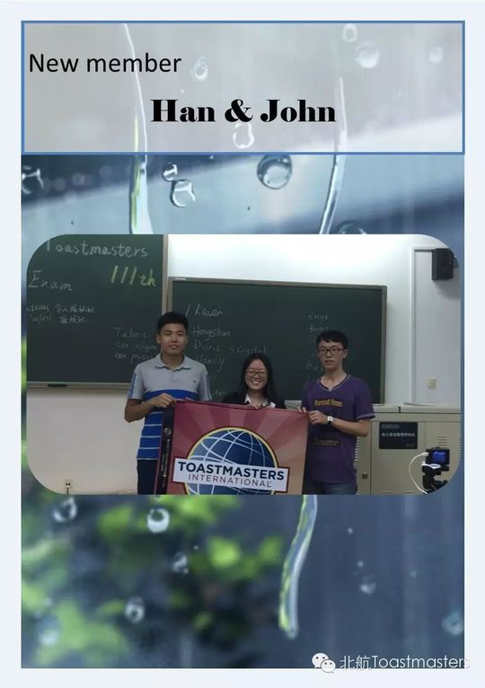
✓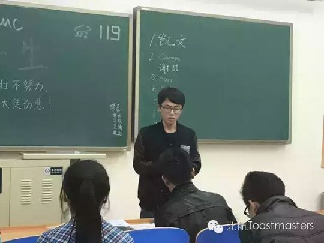
✓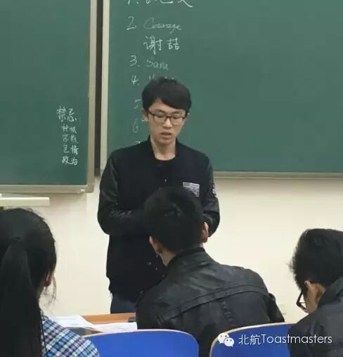
✓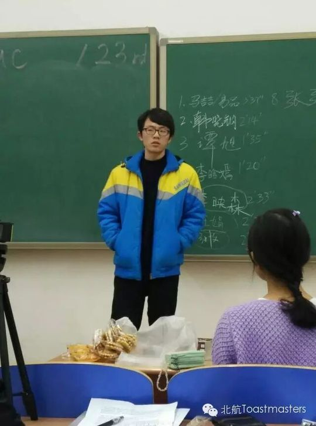
✓ ✓
✓ ✓
✓ ✓
✓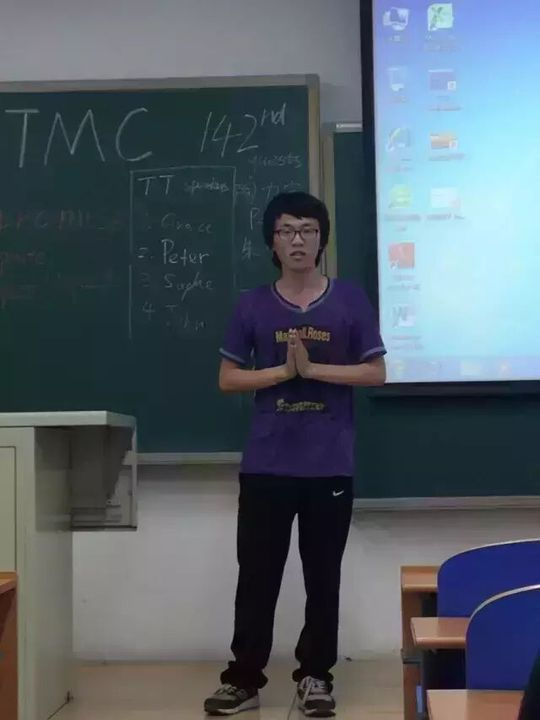
✓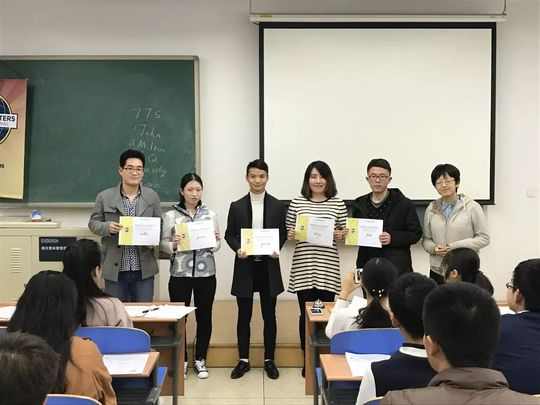
✓


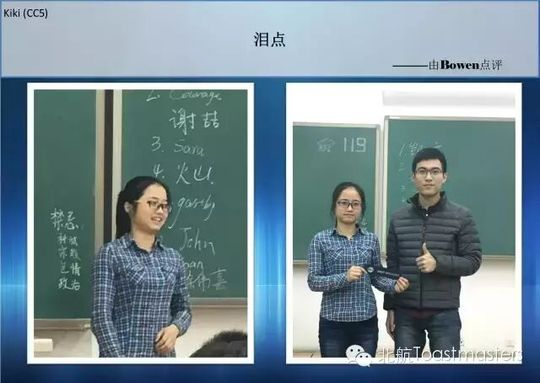
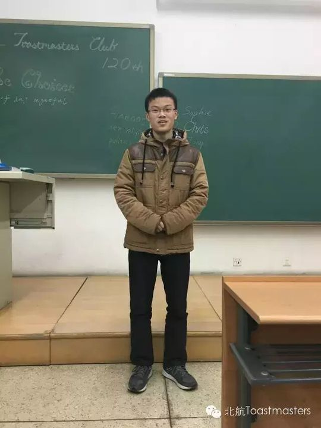


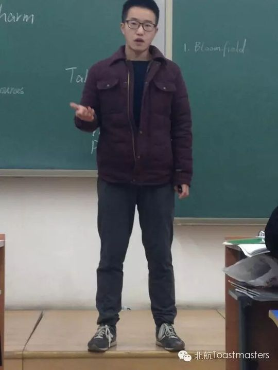


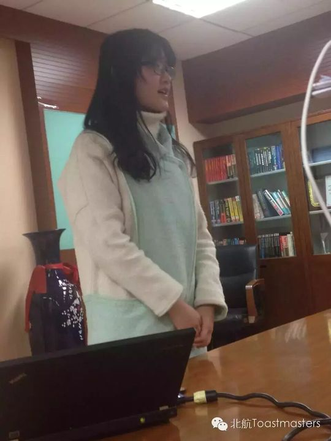

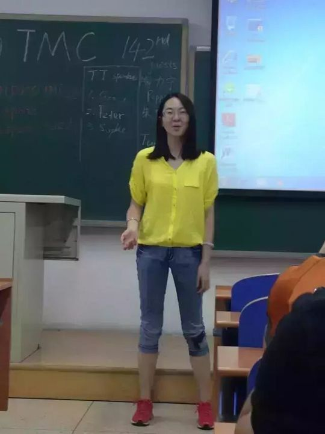


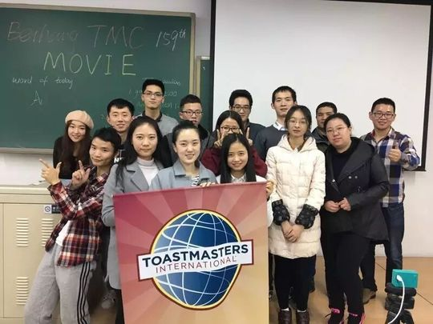
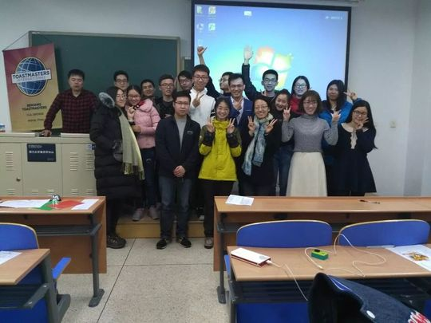

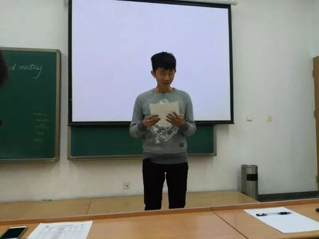
完整足迹 · 34 次出现（点开，每条可跳转原文）
- 2014-04-08成长统计:担任角色0次
- 2014-06-19第64次 · 被提及为半年前毕业告别的会员
- 2015-10-15第114次 · 会议预告：将做CC1破冰演讲《The way I grow up》
- 2015-10-19第114次 · 做CC1破冰演讲《The way I grow up》，获最佳备稿演讲者
- 2015-10-22第115次 · 会议预告：担任即兴演讲主持人
- 2015-11-03第116次 · 即兴演讲，与Bloomfield演父子在酒吧情景
- 2015-11-04第117次 · 会议预告：将做CC2演讲《My Deskmate》
- 2015-11-09第117次 · 做CC2备稿演讲《My Deskmate》
- 2015-11-23第119次 · 即兴演讲，谈中国高中生体质差问题
- 2015-11-26第120次 · 预告备稿演讲Inside and Outside (CC3)
- 2015-12-01第120次 · 即兴演讲谈遨游天际，并做备稿演讲Inside And Outside (CC3)
- 2015-12-14第122次 · 与Kiki搭档被CP，即兴演绎相亲话题
- 2015-12-18第123次 · 备稿演讲《如果》(李映森英文台名指代)
- 2016-01-14第125次 · 即兴演讲称凯文大帝最有言值
- 2016-02-25第126次 · Leaving Home@BeihangTMC 126th Meeting 19
- 2016-03-03第126次 · 126th meeting minutes of Beihang TMC
- 2016-03-10第128次 · 2016 Spring Contest@Beihang TMC 128th Me
- 2016-03-16第128次 · Minutes of 2016 Spring Contest@Beihang T
- 2016-06-20第142次 · Compromise@minutes of BeihangTMC 142nd M
- 2016-08-11第148次 · Job@BeihangTMC 148th Meeting 19:30 Augus
- 2016-09-22第153次 · Choice@Beihang TMC 153th Meeting@19:30 S
- 2016-09-28第153次 · Choices @minutes of 北航 TMC 153rd Meeting
- 2016-11-03第158次 · Winter@Beihang TMC158th Meeting@19:30 No
- 2016-11-17第159次 · Movies@Beihang TMC 159th Meeting@19:30 N
- 2016-11-22第159次 · Movies @minutes of 北航 TMC 159rd Meeting
- 2016-12-04第161次 · "网红" @minutes of 北航 TMC 161th Meeting
- 2016-12-08第162次 · Role on the team @Beihang TMC162nd Meeti
- 2017-03-07第165次 · Spring Festival@minutes of Beihang TMC16
- 2017-03-16第167次 · To be active@BeihangTMC 167th Meeting 19
- 2017-03-17第166次 · Spring Contest Minutes @BeiHang TMC166th
- 2017-03-19第167次 · To be active@BeiHang TMC 167 Meeting Min
- 2017-03-28第168次 · 时光机@BeiHang ToastMaster 168 Meeting Minu
- 2017-06-30第179次 · Education@ Beihang TMC #179th Meeting @1
- 2017-09-01BeiHang TMC 2017 Fall speech contest